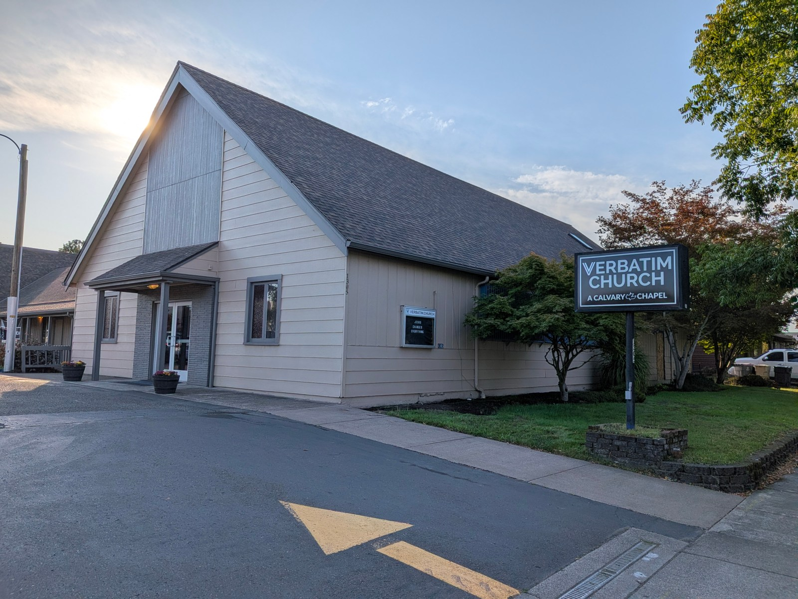
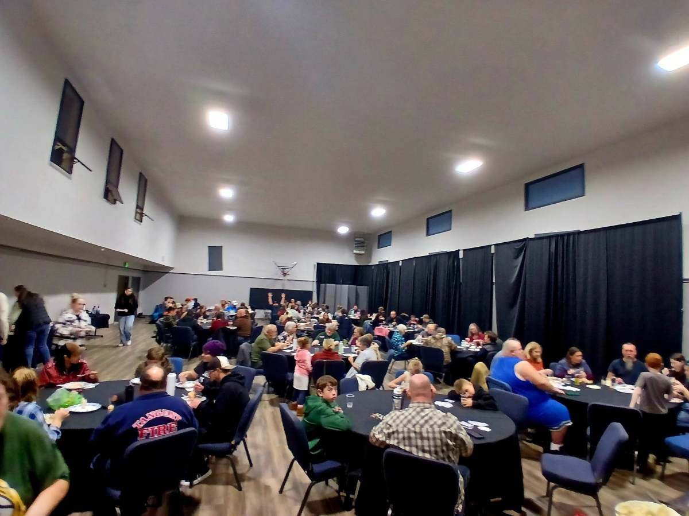

Plan your visit
YOUR FIRST
SUNDAY CAN
FEEL SIMPLE.
Here is everything you need to know before visiting Verbatim Church.
Before you arrive
WHAT SHOULD
I EXPECT?
What should I expect?
Friendly people, Christ-centered worship, clear verse-by-verse Bible teaching, prayer, and a relaxed atmosphere.
What about my children?
Children are welcome. Our team provides a safe, engaging environment where youth can learn about Jesus at an age-appropriate level.
What should I wear?
Come as you are. You will see a mix of casual clothes and Sunday best. There is no dress code.
Where do I go?
Come through the main entrance and our team will help you find the sanctuary, youth area, restrooms, and anything else you need.


We’ll save you a seat
JOIN US THIS
SUNDAY.
Come at 10:00 AM. We would love to meet you.
Open Church Center ↗